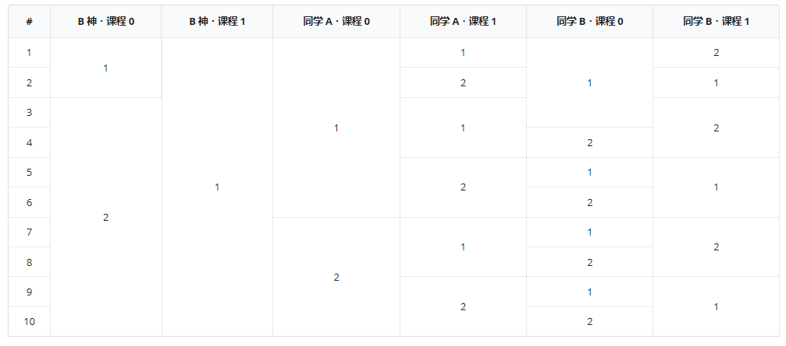
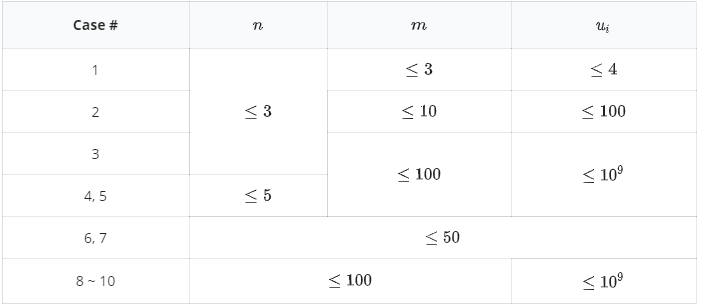

THU 的 G 系中有许许多多的大牛，比如小 R 的室友 B 神。B 神已经厌倦了与其他的同学比较 GPA（Grade Point Average，平均学分绩），他只在意 G 系中共有多少同学被他“碾压”。
B 神声称，在 G 系共有 $k$ 位同学被他碾压。同是 G 系大牛的 D 神则认为 B 神在吹牛，他查到了 B 神每门必修课在 G 系的排名。他用了 173 毫秒的时间就计算出了有多少种情况使得 B 神所说的话成立。现在他想考考聪明的你，看你是否也能求出这个情况数。
G 系共有 $n$ 位同学，$m$ 门必修课。这 $n$ 位同学的编号为 $0$ 到 $n - 1$ 的整数，其中 B 神的编号为 $0$ 号。这 $m$ 门必修课编号为 $0$ 到 $m - 1$ 的整数。如果在每门课上 A 获得的成绩均小于等于B 获得的成绩，则称 A 被 B 碾压。在 B 神的说法中，G 系共有 $k$ 位同学被碾压（不包括他自己），而其他 $n - k - 1$ 名同学则没有被他碾压。
D 神查到了 B 神每门必修课的排名。这里的排名是指，如果 B 神某门课的排名为 $r$，则表示有且仅有 $r - 1$ 位同学这门课的分数大于B 神的分数，有且仅有 $n - r$ 位同学这门课的分数小于等于B 神（不包括他自己）。
我们需要求出全系所有同学每门必修课得分的情况数，使其既能满足 B 神的说法，也能符合 D 神查到的排名。这里两种情况不同当且仅当有任意一位同学在任意一门课上获得的分数不同。你不需要像 D 神那么厉害，你只需要计算出情况数模 $10^9 + 7$ 的余数就可以了。
第一行包含三个正整数 $n, m, k$，分别表示 G 系的同学数量（包括 B 神）、必修课的数量和被 B 神碾压的同学数量。
第二行包含 $m$ 个正整数，依次表示每门课的最高分 $u_i$。
第三行包含 $m$ 个正整数，依次表示 B 神在每门课上的排名 $r_i$。保证 $1 \leq r_i \leq n$。
数据保证至少有 $1$ 种情况使得 B 神的描述成立。
输出一行一个正整数，表示满足条件的情况数模 $10^9 + 7$ 的余数。
3 2 1 2 2 1 2
10
5 3 2 4 3 2 2 1 2
54096
【样例 1 说明】
有且仅有以下 $10$ 种符合条件的情况：

【数据范围】

 Comet OJ
Comet OJ